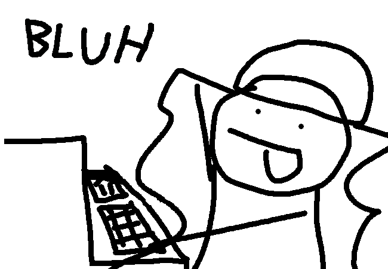

=>
I started the channel for it (informally called sofastuck) on february 22 of this year, the intention was to create an mspaint adventure type story for the sofa, so members could interact with the story through chat
However, my ambition grew quickly, thanks to my basic knowledge of html and css I decided I was going to port sofastuck into a website.
This meant multiple things: firstly, it meant I would have to draw atleast one panel for each action, this has proved to become quite the task, most of the time goes into making each drawing.
I honestly have no motivation to draw, my focus with sofastuck is writting, and I don't have much interest in perfecting my art skills for a silly little comic 5 people are going to read. However I'm a perfectionist, and I have comitted to the bit of spending up an hour drawing one panel that would take about 3 seconds of read time, this has also made me make the multimedia aspect of sofastuck more complex (I guess cause of the comic it's inspired upon, you know, that one), now forcing myself to do animations and even music for a project which such a small reward.
And honestly it is nobody's fault but mine, but the thing is I want it to be this way, I simply cannot imagine another way to showcase the world I have been creating. The multimedia aspect has become essential to The Channel For It, I simply cannot rollback and downgrade my work anymore, so I'm commited to this if I still want to tell the story of sofastuck.
However as I have said, motivation is hard, and I have always tried to mantain the quality of the comic to a solid standard, which isn't easy to achieve with my current skills, I'm sure a more experienced artist would take like 2 minutes drawing one panel, where I'm probably spending around 15 to 30 mins atleast (and god let's not talk about animations).
I'm still not sure what I will do about that, and if I consider dropping the project this will probably be the main reason why.
But besides that, I have been busy around these days, between school, music and other projects I can't find time to put into a project that, as of right now, has become the lowest priority to me. My personal life and future is something I have been worrying about more often, the fear of not living up to the standards that (ironically) I have set for myself, typical teenager crisis blah blah.
I don't want my life to be just that, I also want to have silly projects like these, things I can look back on later in my life, I want to create stuff, whatever that stuff is, it is the curse and bless that everyone who does art is given.
So what happens now?
Sofastuck will now go on hiatus, I mean officially that is, it has been for a while now, but I want to make it clear that I haven't abandoned this project. I don't know when I will pick it up again, but the plan is to continue during summer break and gain the momentum from there, and find a good work balance and flow to not repeat the same pitfalls.
And I mean, its not like nothing I have been doing currently won't help sofastuck, during the past months I have been improving my web development skills, which would greatly help make the development of sofastuck much comfortable and faster to me. Because I have been looking back at this html and css and oh my god you don't have an idea of how much this fucking sucks, it's a lot of messy and hacky tags and attributes glued together in hopes that nothing will break, it also made me colortag names manually which is fucking lame. (and I never bothered to remove the "Built with replit" watermark, I didn't even know you could for some reason).
I should be able to make a much comfortable enviroment to work in with my current skills, automating a lot of meaningless stuff (and also would have mobile support too!). I'm also planning on migrating the site somewhere else (possibly self-hosting, but that's a can of worms that I'll see if I'm getting into), because doing everything through replit REALLY sucks.
So that's everything I guess, thanks for listening to the ramblings of a dumb teenager who still doesn't quite get what being an "artist" means, even though he fully believes he is one, sorry for the drafting not being good and repeating a lot of stuff, I'm writting this at 10pm (when I should be studying, but I'm a fucking idiot so there's that) and there is no fucking way I'm going to revise all of this nonsense text.
But really, thanks for sticking in. I am excited to show you what the world of The Channel For It has to offer, so stay tuned and see you on the flip side! :3
<3